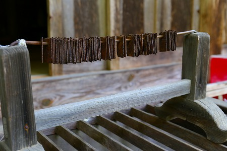

去年上梓した吉田悠軌氏との対談集「
考える珍スポット」。
このサイトをご覧いただいている諸君におかれましては
勿論全員お買い求めいただいておろうが、もしまだの方は↓からご購入できますのでよろしくお願いします

…ポチった？
…というわけで「考える珍スポット」で吉田さんが紹介されていた
修那羅峠の石仏群があまりにも面白そうだったので見に行ったハナシです。
ここには幕末の頃に作られた不思議な石仏がたくさんあるのだという。
場所は長野県の筑北村。
修那羅峠という、なにやら意味ありげな名前の峠の近くにその場所はある。
鬱蒼とした参道を歩いていくとやがて石段が見えてくる。
はあはあ。
鳥居と社殿が見えてきた。
ここは
修那羅山安宮神社といい、
修那羅大天武という山伏が万延元年（1860）に開いたといわれている。
いわば江戸時代末期の騒然とした時期に雨後の筍のごとく出てきた
インディーズ信仰の一種かと思われる。

拝殿前にあったのは百度巡りカウンターだろうか？
既に錆びついて使えそうもないが。
拝殿の中には天狗の像が奉納されていた。
山伏系の信仰をベースにした神社であることが伺える。
神社の拝殿の形式もユニークで、中央の拝殿の左右に比較的新しい建物があり、渡り廊下で連結されている。
その渡り廊下の前に鳥居があり、そこを潜って裏山に出る。
裏山に出ると早速たくさんの石像が草むらの中に点在している。
そのあまりにも訳判らなさに脱力。
ああ、これどうやって太刀打ちしたら良いか良く判んないや…。
まるで異星人の信仰施設にやってきてしまったかのようなアウェー感。
こうして合掌してくれてるだけで救われますよ。
ああ、あなたは誰ですか？敵か味方か判んないっす。
とりあえず今まで
自分が遭遇してきた神仏エクスペリエンスのスペックをフル稼働して読み解くしかないっすね。
双体道祖神…なのだろうか。

これは多分養蚕の神様だったような気がする。
悪魔！（ブブー）
苔むして全然判んないっす。
お雨？岩尊大権現。
いや、全然判んないっす。

修那羅大天武、つまりこの霊場を開いた人物の碑だ。
その碑の下には何時作られたのか判らない頭部が。小学生の卒業制作のようでもあり、昔からあるもののようでもある。
宝剣×宝輪×コーンヘッド？誰？
不動明王は山岳信仰系の人々の間では絶大なる人気を誇る。
描写としては難しいカテゴリーの仏像だが、見事にポンチ絵タッチで乗り切っている。
これも双体道祖神なのだろうか。
これぞ修那羅の神仏石像！と思える
他に類を見ない方々を発見！
こちらは鬼？なのだろうか。角のようなものが生えている。
それ以上に大きく見開いた眼や主張の激しい眉毛、マッチョな二の腕辺りに作者の力量が感じられる。
猫…だよね？
吉田さんの説によるとこの地域では蚕産業が盛んだったのでネズミを食べる猫はこのように尊敬されていたのではないか、との事。
神仏の世界ではあまり重用されない猫だが、ところ変われば猫も神様として祀られる、という事なのだろうか。
さらに進む。ここにも奇妙な石像が並んでいるではないか。
これは…。うむむ。乳が少し垂れてるから山姥かばんば様か奪衣婆あたりか。
とにかくこの神社（というかここに石像を奉納した人たち）にはほかの寺社では見たことのない石像がたくさん奉納されている。
それは既成の神仏以外のマイナーな神や新しい神をヒーチャーすることで、この神社と修那羅大天武が打ち立てた宗教観を確立していこうとしたのだろうか。
幕末に作られたものなのか、最近作られたものなのか、区別がつかない。
でもそれで良いのかな、という気分になって来る。
これが例えば鎌倉時代の石像だったら色々な意味や歴史や背景を加味せざるを得ないが、いかんせん幕末の新宗教の石像である。
文化的価値がないわけではないが、世の中がひっくり返ろうとしていて従来の価値観など何も信じられない北斗の拳のような時代。
そんな世界に生まれた宗教に歴史や意味を求めること自体ナンセンスなのだ。
勿論村の有形文化財にはなっているが、あくまでもその扱いは素朴な民間信仰の残滓的な扱いだ。
それは判る。
私も文化財の審議官だったらそれ以上の価値は見出すことが難しいだろう。
でもさー。
これはある意味
時代の証言者として凄く重要な意味を持っているのではないでしょうか。
徳川250年の治世が崩壊しつつある時期、いわば乱世ですよ。
そんな時代に生まれた信仰は例えようもなくアグレッシブでアナーキーだ。
この石像群は、そんな乱世の時代の空気を今に伝える語り部としてもう少し重要視されてもいいのではないだろうか？
小さな石祠が延々と続く。
この神社を信仰していたとされる佐久間象山が奉納したといわれる千手観音。
修那羅大天武がここを開いた万延元年は、佐久間象山は松代に蟄居されていた時期と重なる。
それ以前から修那羅大天武と親交があったのかどうかは定かではないが、洋学を学び人間的にも些かアレな学者と正体不明なインディーズ宗教との組み合わせは興味深いものがある。
近年作られたと思われる祠が。
長寿の宮といい、昭和55年に作られた。
この神社の遺徳にあやかり地元の老人クラブが建立したそうな。
棚にはここで見られる特異な神仏の石像を模したような像が奉納されていた。
しばらく歩くとやや派手目な祠が見えてきた。
祠というよりも鳥居が何個も連なってそこに屋根が架かって一つの建物になっているような塩梅。
紅白の布は腰巻なのだろうか。安産祈願と書かれていた。
中には女性の石像と観音像が転がっていた。
犬神だろうか？何だかマンガみたいな神様だなあ。
…というわけで余りにも数が多いので一旦休憩します…
修那羅山安宮神社（後半）へ続く